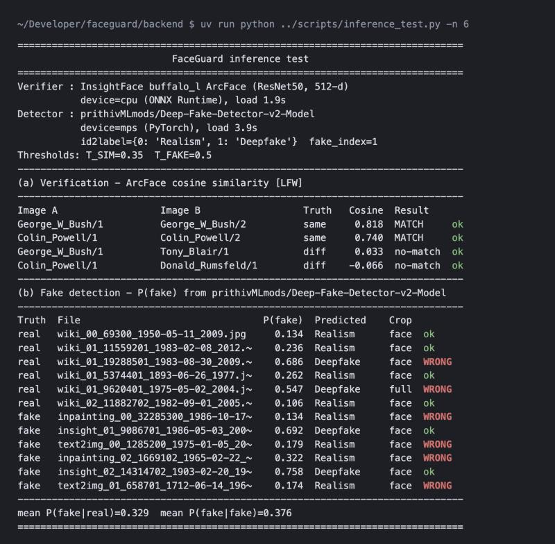
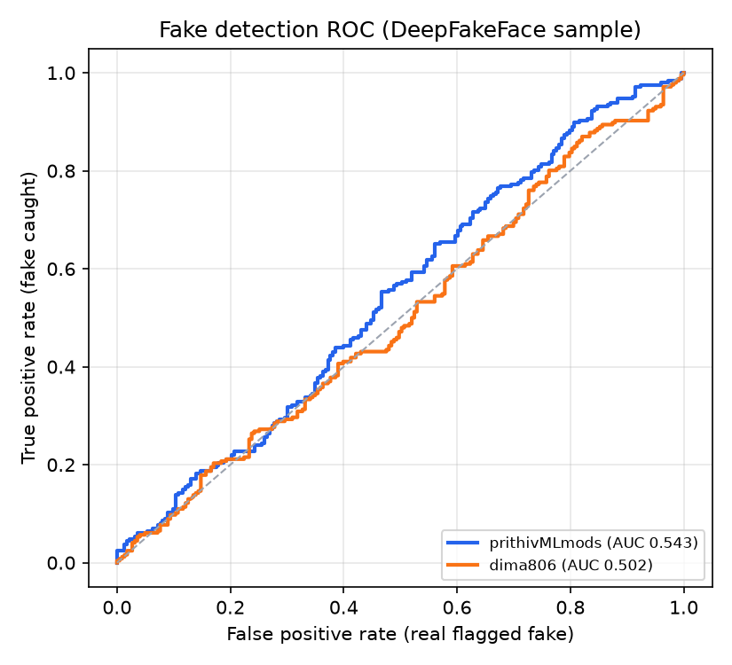

Cody Kandarian · Due November 22, 2026 · Repository: github.com/codyk2/faceguard
FaceGuard is a face verification system with deepfake screening. A user claims an enrolled identity and submits a face photo. The system accepts only if the photo is judged real by a deepfake detector and its face embedding matches the enrolled template. Otherwise it returns REJECT_FAKE, REJECT_MISMATCH or NO_FACE.
1. Modality
Face. Enrollment and probe data are public celebrity photos from Labeled Faces in the Wild (LFW); fake samples come from the public DeepFakeFace benchmark. No photos of people outside these public datasets are collected, so no consent forms are required.
2. Selected models 5 pts
Role
Model
Details
Face detection + alignment
SCRFD-10GF (InsightFace buffalo_l) [2]
Returns face boxes and 5 landmarks; landmarks drive a similarity transform to a 112×112 aligned crop.
Fine-tuned from google/vit-base-patch16-224-in21k; labels {0: Realism, 1: Deepfake}. Runs on PyTorch (Apple MPS). Fallback evaluated: dima806/deepfake_vs_real_image_detection [5].
How the detection model works
The detector is a Vision Transformer (ViT-Base/16) pretrained on ImageNet-21k and fine-tuned as a binary real-versus-fake face classifier. FaceGuard crops the detected face with a 30% margin (so the blending boundary between face and background stays in view) and resizes it to 224×224. The ViT cuts this crop into 196 non-overlapping 16×16 patches, linearly projects each patch to a 768-dimensional token, adds a learned position embedding, and prepends a learned classification token. Twelve transformer encoder layers then apply multi-head self-attention, so every patch can attend to every other patch in the face.
That global attention suits the task. Face swaps and generated faces tend to carry inconsistencies that span regions, such as blending seams at the face boundary, texture or lighting that differs between the face and its surroundings, and unnatural high-frequency detail. A CNN sees these only through gradually growing receptive fields. The final state of the classification token goes through a linear head and softmax, giving P(fake). FaceGuard reads which output index means “fake” from the model's id2label configuration rather than hard-coding it, and rejects the probe when P(fake) ≥ TFAKE (0.5 by default). A known limitation of such classifiers is weak generalisation to generation methods absent from their fine-tuning data, so we measure the detector on our own benchmark rather than relying on its model card (Section 3).
3. Inference tests 5 pts
Both models were run on real data with scripts/inference_test.py. Verification uses LFW image pairs; detection uses real and fake images from DeepFakeFace [7], with the fakes spread across its three generation methods (Stable Diffusion inpainting, InsightFace face swap, Stable Diffusion text-to-image).

Figure 1. inference_test.py: both models loaded (ArcFace on CPU via ONNX Runtime, ViT on Apple MPS); four verification pairs all correct; twelve detection samples.
Verification works as expected: same-person pairs score 0.74–0.82 and different-person pairs score about 0, far apart on either side of TSIM = 0.35. Detection is the weak link: the ViT catches the face swaps (P(fake) 0.69 and 0.76) but scores the diffusion inpainting and text-to-image fakes as real, and flags two of six real photos as fake.
End-to-end through the web interface
The same models serve the FastAPI backend behind the React interface. Ten LFW celebrities were enrolled; Figure 2 shows a held-out photo of an enrolled identity, an impostor, and a face-swap fake, each verified against the claimed identity “George W Bush”.
Figure 2a. Genuine held-out photo: ACCEPT, cosine 0.780, P(fake) 19.9%. The main face is chosen over the partly visible person at the edge.
Seeding the ten identities also exposed the detector's false-positive rate on real photos: 18 of the 40 genuine LFW enrollment images were flagged as fake (P(fake) 0.52–0.82) and excluded, so most identities enrolled with 1–3 images instead of 4.
Benchmark evaluation (scripts/evaluate.py)
Beyond the spot checks, both models were evaluated on full benchmarks: verification on the 6,000 standard LFW pairs.txt pairs (3,000 genuine, 3,000 impostor), and detection on all 600 DeepFakeFace images, comparing both candidate detectors.
Verification (ArcFace, LFW 6,000 pairs)
ROC AUC
0.9956
Equal error rate
0.63% (at cosine 0.151)
FAR / FRR at TSIM = 0.35
0.00% / 1.07%
Accuracy at TSIM
99.47%
Mean cosine, genuine / impostor
0.666 / 0.002
Detection at TFAKE = 0.5
prithivMLmods
dima806
Accuracy
0.512
0.535
Precision / recall
0.55 / 0.41
0.54 / 0.84
ROC AUC
0.543
0.502
Real photos flagged fake
37%
80%
Fakes caught: inpaint / swap / text2img
46 / 41 / 35%
82 / 78 / 92%
Detection was scored on the 469 of 600 images with a usable face (131 group or small-face photos have faces under 60 px and are rejected as low quality). The face-selection fix in Section 4 cut verification FRR from 6.17% to 1.07% and EER from 5.07% to 0.63%.

Figure 3. Detection ROC on DeepFakeFace: both detectors sit on the chance diagonal.
Takeaway. Verification is strong: at the default threshold it accepted no impostor pairs and rejected about 1 in 100 genuine pairs.
Off-the-shelf deepfake detection does not transfer to this benchmark. The primary model's AUC of 0.54 is near chance; the fallback flags 80% of everything as fake, real photos included. This confirms the generalisation risk from Section 2. The next milestone will fine-tune the ViT on a held-out training split of DeepFakeFace and recalibrate TFAKE, keeping a disjoint test split.
4. Repository, environment and labor division 5 pts
Repository:https://github.com/codyk2/faceguard (private; access by collaborator invite). One command sets up each half: make setup runs uv sync (Python 3.11) and npm install; make data, make inference-test, make dev and make test cover the rest.
39 tests (decision logic, API flows, real-model smoke tests); all passing
Environment and dependency issues resolved
Problem
Fix
Project on an iCloud-synced Desktop corrupts virtualenvs
Moved the project to ~/Developer
insightface 0.7.3 ships only as source and compiles a Cython extension
Xcode Command Line Tools; Python 3.11 for arm64 wheel coverage of onnxruntime and torch
InsightFace incompatible with NumPy 2
Pinned numpy<2.0
SSL certificate errors (uv's standalone Python has no system CA store) in albumentations' update check and dataset downloads
NO_ALBUMENTATIONS_UPDATE=1; certifi SSL context for downloads
The two detector models use different label names and orders
P(fake) index resolved from model.config.id2label
Largest-box face selection picked half-visible neighbours on LFW crops (boxes extend past the image edge)
Rank faces by image-clipped area weighted toward the centre
Labor division
This is a solo project. Cody Kandarian is responsible for all parts: modality and model selection, environment setup, face preprocessing, verification and detection integration, the FastAPI backend, the React interface, data collection and evaluation, and the report.
References
J. Deng, J. Guo, N. Xue, S. Zafeiriou. ArcFace: Additive Angular Margin Loss for Deep Face Recognition. CVPR, 2019.
J. Guo, J. Deng, A. Lattas, S. Zafeiriou. Sample and Computation Redistribution for Efficient Face Detection. ICLR, 2022.
A. Dosovitskiy et al. An Image Is Worth 16x16 Words: Transformers for Image Recognition at Scale. ICLR, 2021.
prithivMLmods. Deep-Fake-Detector-v2-Model. Hugging Face, https://huggingface.co/prithivMLmods/Deep-Fake-Detector-v2-Model (accessed Nov 21, 2026).
dima806. deepfake_vs_real_image_detection. Hugging Face, https://huggingface.co/dima806/deepfake_vs_real_image_detection (accessed Nov 21, 2026).
G. B. Huang, M. Ramesh, T. Berg, E. Learned-Miller. Labeled Faces in the Wild: A Database for Studying Face Recognition in Unconstrained Environments. UMass Amherst Tech. Rep. 07-49, 2007.
H. Song, S. Huang, Y. Dong, W.-W. Tu. Robustness and Generalizability of Deepfake Detection: A Study with Diffusion Models. arXiv:2309.02218, 2023.